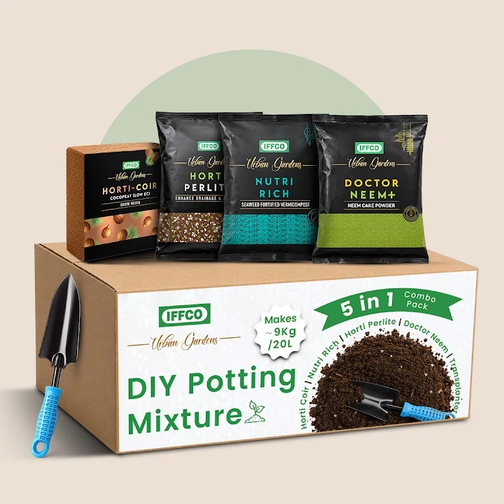

Product stories
IFFCO Urban Gardens · Ecommerce
Selected in-house & freelance work
Selected work04
From a product’s first impression to a brand’s everyday presence. A selection of in-house and freelance work.
Selected motion work / 06 films
A little movement.
A different dimension.
Six stories for IFFCO Urban Gardens, from seasonal ideas to people, plants and places.
When this gallery is focused, use the left and right arrow keys to scroll between videos. Open a preview to watch its original social post.
Gardening myths
InstagramNew Year plant stories
InstagramGardens through Gardeners’ Lens
LinkedInA greener workstation
LinkedInThe Garden Nest
LinkedIn6 videos
Open a preview to watch. Playback is provided by Instagram or LinkedIn.
Explore social & motionA little about me
Clear Ideas.
Expressive Art.
I’m Ebadur. I turn ideas into identities, images, and motion.
At IFFCO Urban Gardens, I create ecommerce visuals, packaging, social content and motion graphics. My work brings together clear information and expressive imagery, from explaining a product to building a consistent visual story.
My work spans branding, packaging, ecommerce and social content, digital design, motion graphics and video editing. Across print and screen, I give ideas a clear and expressive visual voice.
- Experience
- Graphic Designer · IFFCO Urban Gardens
July 2025–Present - Education
- Motion Graphics · Arena Animation
- Practice
- Ecommerce · Packaging · Social content
Motion graphics · Video editing